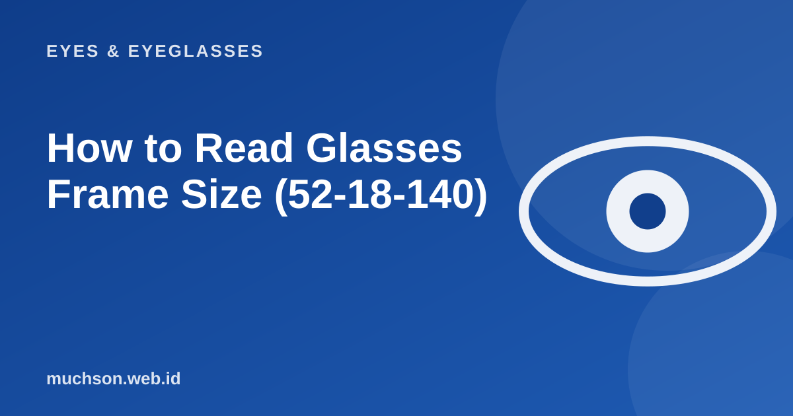

Home › Articles › Eyes & Eyeglasses
Eyes & EyeglassesHow to Read Glasses Frame Size (52-18-140)
If you have ever noticed small numbers on the inside of a glasses temple, that is the size code. Reading it lets you buy a new frame that fits without trying on every one.

Three numbers, three measurements
Text description of the diagram
- First number: lens width (mm)
- Second number: nose bridge width (mm)
- Third number: temple length (mm)
How to choose a size that fits
- Start from glasses that are already comfortable. Note the three numbers on the temple, then look for frames with similar numbers.
- Total frame width. It is 2 x lens width + bridge. The frame should be slightly wider than your temples without pressing on your head.
- The nose bridge. Too narrow pinches, too wide slips. Choose one that matches the width of the base of your nose.
- Temple length. The tip of the temple should sit behind your ear without pressing.
- Lens height. This matters for progressive lenses because they need enough height.
Signs the frame does not fit
| Symptom | Likely cause | What to do |
|---|---|---|
| The frame slides down when you look down | The bridge is too wide or the temples are loose | Adjust the nose pads or choose a smaller size |
| Red marks beside the nose | The bridge is too narrow or the pads are hard | Adjust the pads, change the size |
| Pain behind the ears | The temples are too short or too tight | Have the temple curve adjusted at the optical shop |
| Eyelashes touch the lens | The frame sits too close to the eye | Adjust the nose pads to move it away |
Before giving up on a frame
Many fit problems can be fixed with small adjustments: bending the nose pads and warming the temples. Optical shops usually do this at no charge for customers.
FAQ
Does the same size mean it will definitely fit?
Not always, because shape and design differ from model to model. The size is a good starting point.
What if I buy online and it does not fit?
Choose a shop that offers advice and a clear adjustment or exchange policy, and send the size of your old frame as a reference.
Does frame size affect lens thickness?
Yes. A bigger frame makes the lens edges thicker for a strong minus prescription. Choose a smaller frame if your minus is high.